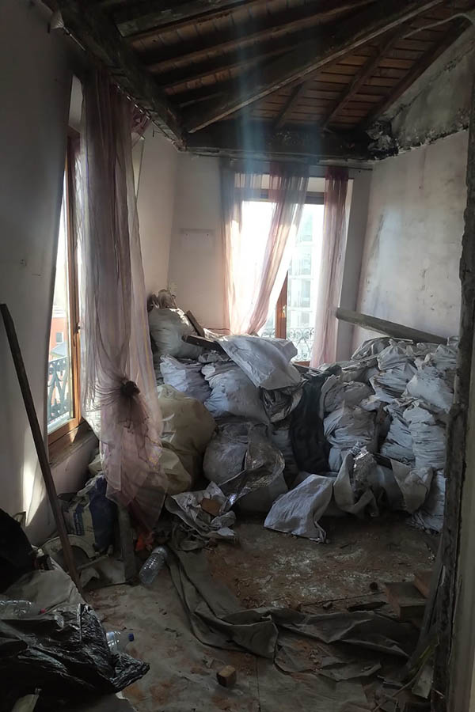
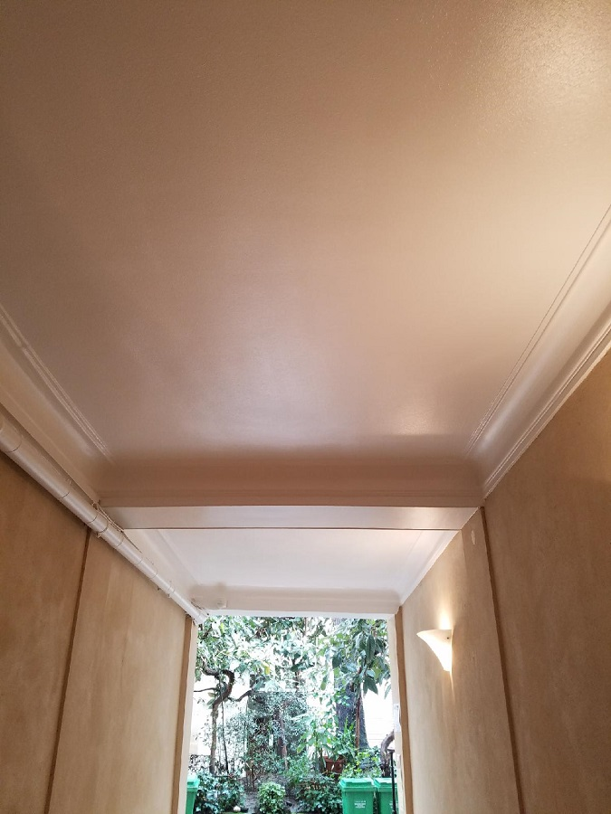

La fuite est réparée. Reste le plafond, abîmé par le dégât des eaux : une auréole, une peinture qui cloque, parfois une plaque qui gonfle. Faut-il reprendre la zone abîmée ou refaire toute la surface ? La réparation dépend du matériau, de l’état du support une fois sec, et de ce que l’expert a constaté.
En bref
- Un plafond abîmé par un dégât des eaux se répare une fois la cause traitée et le plafond sec, mesures d’humidité à l’appui. On reprend la zone abîmée si le support tient, on dépose et on refait ce qui est déformé, se décolle ou s’effrite.
- Un plafond qui gonfle, se fend ou goutte près d’un luminaire demande d’agir tout de suite : coupez l’électricité et ne restez pas dessous.
- Le devis doit dire ce qui est déposé, ce qui est repris, et sur quelle surface la peinture est refaite.
Les signes de danger
Certains signes n’attendent pas la visite de l’expert :
- le plafond gonfle ou forme une poche
- une fissure s’ouvre, des morceaux tombent
- l’eau coule près d’un plafonnier, d’un spot ou d’une prise
- une plaque de faux plafond s’affaisse
Coupez alors l’électricité : Service Public et France Assureurs le conseillent, contre le risque d’électrocution et de court-circuit. Ne restez pas sous la zone, et éloignez ce qui peut l’être. Si le danger est immédiat, appelez les pompiers au 18.
Un plafond en plaques de plâtre qui a pris l’eau peut tomber. La photothèque de l’Agence Qualité Construction (AQC) en montre un, tombé après des infiltrations, sous une terrasse.
Le service de dépannage d’A.T.C. BAT est disponible 7 j/7, 24 h/24.
Plâtre, plaques de plâtre, plafond ancien
La réparation dépend du matériau.
Les plaques de plâtre, au plafond ou en faux plafond, craignent l’eau. L’AQC les range parmi les matériaux sensibles à l’eau, dont les qualités peuvent être abîmées pour un temps ou pour de bon. Une plaque déformée, ramollie ou qui s’effrite se remplace. Les autres se jugent une fois sèches.
Un plafond en plâtre traditionnel se reprend une fois sec : on gratte ce qui s’écaille, on ouvre les fissures et on enlève les parties trop dégradées, puis on rebouche et on enduit.
Dans un immeuble ancien, le plafond peut cacher des poutres et un plancher en bois, comme sur cette photo d’une de nos rénovations. Quand l’eau a traversé un plancher, on regarde aussi le bois : l’AQC signale qu’une fuite lente peut faire pourrir un plancher en bois et y développer des champignons.

Réparer une partie ou refaire toute la surface
Une fois le plafond sec, on reprend la zone abîmée si le support tient, et on refait toute la surface quand les dégâts s’étendent ou qu’une reprise de peinture resterait visible. Trois éléments décident :
- L’étendue des dégâts. Une auréole isolée ne se traite pas comme un plafond taché d’un bout à l’autre.
- L’état du support. Un plâtre qui tient et une plaque restée plane se reprennent. Ce qui se décolle ou s’effrite se dépose.
- L’aspect final. Une reprise de peinture limitée à la zone abîmée peut rester visible. Le devis dit si la peinture est refaite sur la zone ou sur tout le plafond.
L’expert de l’assurance, s’il passe, donne aussi son avis : l’INC rappelle que son rapport indique les mesures à prendre, réparation ou remplacement.
Un exemple tiré d’un de nos devis de 2025, sans nom ni adresse : la reprise d’un faux plafond après un dégât des eaux. Le devis l’écrivait en toutes lettres : l’intervention ne concernait que la zone de la trappe de visite posée à cette occasion, environ 1 m², et pas tout le plafond.
À l’inverse, un de nos devis de septembre 2024 portait sur le faux plafond d’un appartement, bombé après un dégât des eaux, avec des rails gorgés d’eau. Il prévoyait de le déposer sur 8 m², de reprendre l’ancien plafond en plâtre caché au-dessus, abîmé lui aussi, puis de poser des plaques neuves. Il fallait aussi enlever les parties moisies.
Remise en état après un dégât des eaux : plafonds, murs, sols
Réparer un plafond après un dégât des eaux : l’ordre des travaux
- Réparer la cause. Service Public compte cette réparation parmi les mesures d’urgence, qui n’empêchent pas l’indemnisation.
- Faire constater. L’assureur ou son expert doit pouvoir voir les dégâts avant toute réparation définitive. Les devis peuvent être faits avant son passage.
- Laisser sécher, et mesurer. L’INC note que l’examen des dommages se fait souvent plusieurs semaines après le sinistre, le temps que l’eau sèche. L’AQC cite le contrôle d’une surface avant de la peindre parmi les usages des appareils de mesure de l’humidité.
- Déposer ce qui est abîmé : plaques déformées, plâtre décollé. Regarder ce qu’il y a au-dessus : bois, gaine, tuyau.
- Reprendre le support : rebouchage, enduit, ponçage, primaire d’accrochage.
- Peindre.
Temps de séchage après un dégât des eaux : quand repeindre ?
Ce que le devis doit détailler
Pour comparer, et pour l’assureur, un devis de reprise de plafond dit :
- la pièce et la zone, avec la surface concernée
- l’état de la cause : réparée ou non, et quand
- ce qui est déposé et remplacé, ce qui est seulement repris
- les étapes de préparation et le nombre de couches de peinture
- l’accès en hauteur et la protection des lieux, surtout dans un logement occupé
- ce qui n’est pas compris
Le devis de 2025, celui de la trappe, détaillait chaque étape, de l’accès en hauteur à la peinture, avec la surface traitée.
Ce que doit détailler un devis après un dégât des eaux
Devis sous 24 h : votre devis vous est envoyé dès que nous avons les informations nécessaires à l’intervention.
France Assureurs cite, parmi les dommages en général couverts par la garantie dégâts des eaux, les embellissements et les petits dommages immobiliers, comme les raccords de plâtre. Votre contrat fait foi.
Avant et après
Un exemple de reprise de plafond dans les parties communes : le hall d’un immeuble, plafond écaillé et taché, puis plafond et corniches repris et repeints.


Hall d’immeuble : plafond écaillé et taché, puis plafond et corniches repeints.
Sources
- Service Public (DILA), « Assurance dégâts des eaux », fiche F1352, vérifiée le 25 juillet 2025
- France Assureurs, « Assurance habitation : le règlement d’un dégât des eaux », publié le 26 mars 2021
- Institut national de la consommation (INC), « L’assurance dégâts des eaux », fiche pratique J 80, publiée le 16 juin 2018
- Agence Qualité Construction, « Humidité dans la construction : 12 enseignements à connaître », dispositif REX Bâtiments performants, décembre 2019
- Agence Qualité Construction, « Dégradation d’un plafond sous une terrasse », photothèque (concours photo AQC 2022)
- Agence Qualité Construction, « Dégâts des eaux en salle de bain : comment les éviter ? », Prévention des risques en habitation, fiche n° 2, janvier 2024
- Agence Qualité Construction, « Mesurer l’humidité dans les matériaux », Revue Qualité Construction n° 91, juillet-août 2005 (résumé en accès libre)
Sources consultées le 15 octobre 2026. Cet article donne des repères généraux. Votre contrat d’assurance, le rapport de l’expert et le diagnostic sur place font foi.